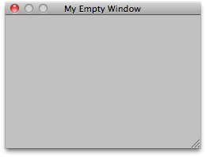

| t | 窗口类型。必须派生自 EditorWindow。 |
| utility | 将此参数设置为 true 可创建浮动实用程序窗口，设置为 false 可创建正常窗口。 |
| title | 如果 GetWindow 创建新窗口，则会获得此标题。如果此值为 null，则使用类名称作为标题。 |
| focus | 是否为窗口提供焦点（如果已存在）。（如果 GetWindow 创建新窗口，则将始终获得焦点）。 |
返回当前屏幕上第一个 t 类型的 EditorWindow。
如果没有，则创建并显示新窗口，然后返回其实例。

Simple Empty non-dockable window.
using UnityEngine; using UnityEditor;
// Simple script that creates a new non-dockable window public class EditorWindowTest : EditorWindow { [MenuItem("Example/Display simple Window")] static void Initialize() { EditorWindowTest window = (EditorWindowTest)EditorWindow.GetWindow(typeof(EditorWindowTest), true, "My Empty Window"); } }
| T | 窗口类型。必须派生自 EditorWindow。 |
| utility | 将此参数设置为 true 可创建浮动实用程序窗口，设置为 false 可创建正常窗口。 |
| title | 如果 GetWindow 创建新窗口，则会获得此标题。如果此值为 null，则使用类名称作为标题。 |
| focus | 是否为窗口提供焦点（如果已存在）。（如果 GetWindow 创建新窗口，则将始终获得焦点）。 |
返回当前屏幕上第一个 T 类型的 EditorWindow。
如果没有，则创建并显示新窗口，然后返回其实例。
| T | 窗口类型。必须派生自 EditorWindow。 |
| title | 如果 GetWindow 创建新窗口，则会获得此标题。如果此值为 null，则使用类名称作为标题。 |
| desiredDockNextTo | 窗口试图停靠到其上的 EditorWindow 类型的数组。 |
| focus | 是否为窗口提供焦点（如果已存在）。（如果 GetWindow 创建新窗口，则将始终获得焦点）。 |
返回当前屏幕上第一个 T 类型的 EditorWindow。
如果没有，则创建并显示新窗口，然后返回其实例。 创建的窗口将试图停靠在发现的第一个指定类型的窗口旁边。